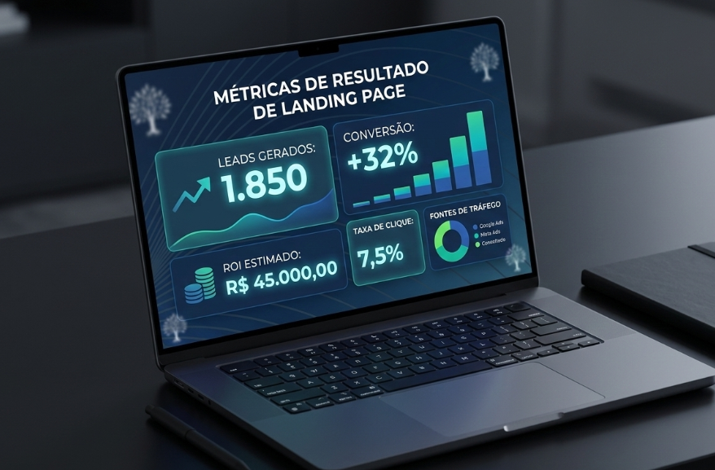
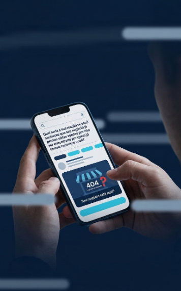
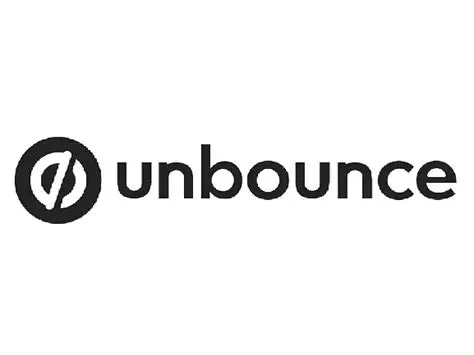
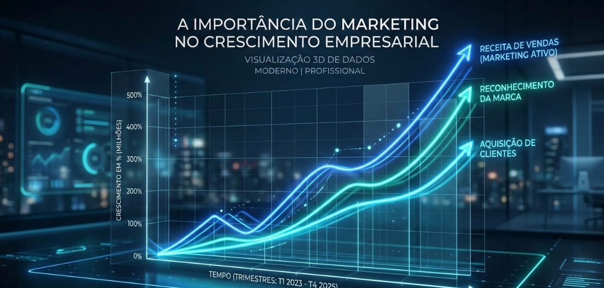

Lembra daquela vez que você mesmo tentou buscar no Instagram ou, principalmente, no Google aquela lojinha bonita,
um restaurante ou aquele comércio
incrível que você viu quando passou em frente?
Você queria muito saber que horas eles funcionavam, se serviam o seu prato
favorito ou se tinham o
produto que você tanto precisava naquele exato momento.

Sem dúvida, foi a falta de uma presença digital estratégica. E é exatamente esse o 'ponto cego' que está fazendo você perder vendas hoje.

Afirmam, mediante sua liderança no mercado estratégico de marketing, que uma Landing Page bem otimizada para um serviço específico gera mais de 10% de conversão (a média é de 2%) e acrescentam:
"Aumentar suas páginas de destino de 10 para 15 pode gerar um salto de 55% em novos leads." — Fonte: HubSpot Research.
+55% de Leads: Estatística comprovada ao escalar páginas segmentadas.
Foco no ROI: Estruturas desenhadas para reduzir seu custo por clique e maximizar o lucro.

Segundo a CB Insights, mais de 50% das empresas fecham por falhas na conexão com o mercado. Ter uma Landing Page baseada nos princípios de mercado não é um gasto de "propaganda", é o seguro que garante que sua boa administração terá lucros para gerenciar.